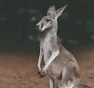

На нашей планете живёт множество удивительных животных.
Давайте узнаем о некоторых из них!
Топ-5 интересных животных
- Кенгуру


- Дельфин
- Слон
- Панда
- Тигр
Узнай больше!
Хотите узнать больше о животных? Вот несколько полезных ссылок:
Заключение
Животные — удивительные существа, и каждый из них уникален. Исследуйте мир животных и открывайте для себя новое!
Хотите прогулятся в галерею удивительного холодного оружия?
Заключение
Холодное оружие - удивительная тема. Каждый меч,нож каждый вид оружия уникален.